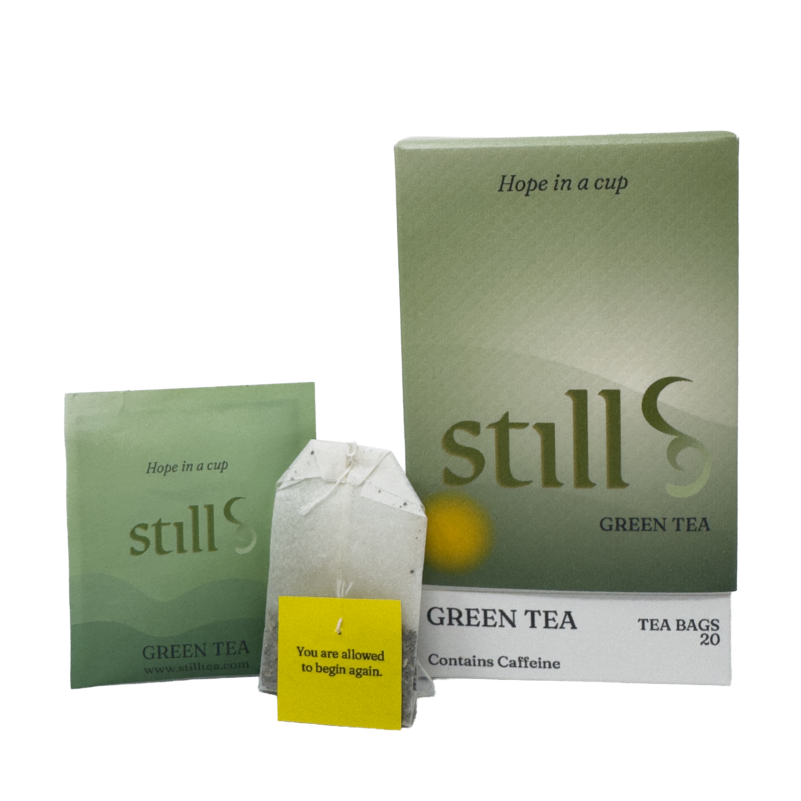

A BRIGHTER DAY STILL BREWS
There is
still tomorrow.
Some days are easier than others.
We know it's hard.
But the sun continues to rise,
the seasons continue to change,
and somewhere, a kettle is boiling.
still; was created around the belief that even the smallest routines can give us something to look forward to.
A cup for today.
A little hope for tomorrow.
There is still time.

MORE THAN A NAME
A story that continues.
For centuries, tea has carried stories of its own. Within the quiet rituals passed down through generations, there is meaning in even the smallest details. Some simply take a little more care to discover.
We believe people carry stories in much the same way.
The struggles that go unnoticed, the small victories we never celebrate, and the parts of ourselves that seem to fade into the world around us. still; was created to recognize what often goes unseen.
We see you. We see you trying, even when no one else does.
But fading is not the same as disappearing. There is still light to be found within yourself. There is beauty in rediscovery, in rising again, and in finding the courage to shine in ways you once thought you had forgotten.
You never know who needs to hear that they are not alone.
A semicolon represents more than continuation. To us, it represents an awakening. The freedom to be seen, the courage to create your own light, and the possibility of becoming something more.
May we find the courage to be a little louder about the things we have carried so quietly.
You are still here.
You are still becoming.
Your story is still being written.
ONE CUP AT A TIME
1%OF EVERY SALE
Every story
deserves to continue;
1% of every sale supports suicide prevention.
STILL; was created with a purpose that extends beyond the cup. We believe that small, everyday actions can contribute to something greater.
Through our commitment to suicide prevention, we hope to support efforts that make resources, education and help more accessible.
Because there is still tomorrow.
Find Support